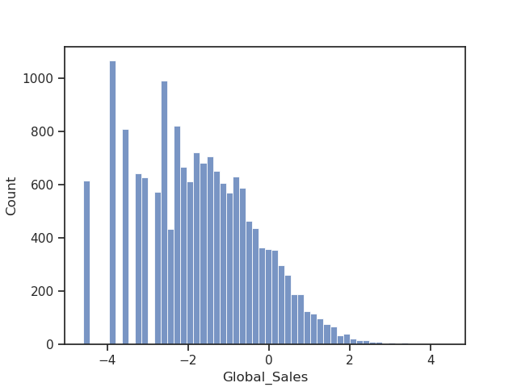

Note
Go to the end to download the full example code. or to run this example in your browser via JupyterLite or Binder
Wikipedia embeddings to enrich the data#
When the data comprises common entities (cities, companies or famous people), bringing new information assembled from external sources may be the key to improving the analysis.
Embeddings, or vectorial representations of entities, are a convenient way to capture and summarize the information on an entity. Relational data embeddings capture all common entities from Wikipedia. [1] These will be called KEN embeddings in the following example.
We will see that these embeddings of common entities significantly improve our results.
Note
This example requires pyarrow to be installed.
The data#
We will take a look at the video game sales dataset. Let’s retrieve the dataset:
import pandas as pd
from skrub import datasets
data = datasets.fetch_videogame_sales()
X = data.X
X.head(3)
Downloading 'videogame_sales' from https://github.com/skrub-data/skrub-data-files/raw/refs/heads/main/videogame_sales.zip (attempt 1/3)
Our goal will be to predict the sales amount (y, our target column):
0 82.74
1 40.24
2 35.82
3 33.00
4 31.37
...
16567 0.01
16568 0.01
16569 0.01
16570 0.01
16571 0.01
Name: Global_Sales, Length: 16572, dtype: float64
Let’s take a look at the distribution of our target variable:
import matplotlib.pyplot as plt
import seaborn as sns
sns.set_theme(style="ticks")
sns.histplot(y)
plt.show()

It seems better to take the log of sales rather than the absolute values:
Before moving further, let’s carry out some basic preprocessing:
Extracting entity embeddings#
We will use KEN embeddings to enrich our data.
We will start by checking out the available tables with
fetch_ken_table_aliases:
from skrub.datasets import fetch_ken_table_aliases
fetch_ken_table_aliases()
{'all_entities', 'games', 'albums', 'companies', 'movies', 'schools'}
The games table is the most relevant to our case.
Let’s see what kind of types we can find in it with the function
fetch_ken_types:
from skrub.datasets import fetch_ken_types
fetch_ken_types(embedding_table_id="games")
Interesting, we have a broad range of topics!
Next, we’ll use fetch_ken_embeddings
to extract the embeddings of entities we need:
from skrub.datasets import fetch_ken_embeddings
KEN Embeddings are classified by types.
See the example on fetch_ken_embeddings
to understand how you can filter types you are interested in.
The fetch_ken_embeddings function
allows us to specify the types to be included and/or excluded
so as not to load all Wikipedia entity embeddings in a table.
In a first table, we include all embeddings with the type name “game” and exclude those with type name “companies” or “developer”.
embedding_games = fetch_ken_embeddings(
search_types="game",
exclude="companies|developer",
embedding_table_id="games",
)
In a second table, we include all embeddings containing the type name “game_development_companies”, “game_companies” or “game_publish”:
embedding_publisher = fetch_ken_embeddings(
search_types="game_development_companies|game_companies|game_publish",
embedding_table_id="games",
)
# We keep the 200 embeddings column names in a list (for the |Pipeline|):
n_dim = 200
emb_columns = [f"X{j}" for j in range(n_dim)]
emb_columns2 = [f"X{j}_aux" for j in range(n_dim)]
Merging the entities#
We will now merge the entities from Wikipedia with their equivalent match in our video game sales table:
The entities from the ‘embedding_games’ table will be merged along the column “Name” and the ones from ‘embedding_publisher’ table with the column “Publisher”
from skrub import Joiner
fa1 = Joiner(embedding_games, aux_key="Entity", main_key="Name")
fa2 = Joiner(embedding_publisher, aux_key="Entity", main_key="Publisher", suffix="_aux")
X_full = fa1.fit_transform(X)
X_full = fa2.fit_transform(X_full)
Prediction with base features#
We will forget for now the KEN Embeddings and build a typical learning pipeline, where will we try to predict the amount of sales only using the base features contained in the initial table.
We first use scikit-learn’s ColumnTransformer to define the columns
that will be included in the learning process and the appropriate encoding of
categorical variables using the MinHashEncoder and OneHotEncoder:
from sklearn.compose import make_column_transformer
from sklearn.preprocessing import OneHotEncoder
from skrub import MinHashEncoder
min_hash = MinHashEncoder(n_components=100)
ohe = OneHotEncoder(handle_unknown="ignore", sparse_output=False)
encoder = make_column_transformer(
("passthrough", ["Year"]),
(ohe, ["Genre"]),
(min_hash, "Platform"),
remainder="drop",
)
We incorporate our ColumnTransformer into a Pipeline.
We define a predictor, HistGradientBoostingRegressor, fast and reliable for big datasets.
from sklearn.ensemble import HistGradientBoostingRegressor
from sklearn.pipeline import make_pipeline
hgb = HistGradientBoostingRegressor(random_state=0)
pipeline = make_pipeline(encoder, hgb)
The Pipeline can now be readily applied to the dataframe for prediction:
from sklearn.model_selection import KFold, cross_validate
# We will save the results in a dictionary:
all_r2_scores = dict()
all_rmse_scores = dict()
# The dataset is ordered by rank (most sales first so we need to shuffle before
# splitting into cross-validation folds)
cv = KFold(shuffle=True, random_state=0)
cv_results = cross_validate(
pipeline, X_full, y, scoring=["r2", "neg_root_mean_squared_error"], cv=cv
)
all_r2_scores["Base features"] = cv_results["test_r2"]
all_rmse_scores["Base features"] = -cv_results["test_neg_root_mean_squared_error"]
print("With base features:")
print(
f"Mean R2 is {all_r2_scores['Base features'].mean():.2f} +-"
f" {all_r2_scores['Base features'].std():.2f} and the RMSE is"
f" {all_rmse_scores['Base features'].mean():.2f} +-"
f" {all_rmse_scores['Base features'].std():.2f}"
)
With base features:
Mean R2 is 0.21 +- 0.01 and the RMSE is 1.30 +- 0.01
Prediction with KEN Embeddings#
We will now build a second learning pipeline using only the KEN embeddings from Wikipedia.
We keep only the embeddings columns:
encoder2 = make_column_transformer(
("passthrough", emb_columns), ("passthrough", emb_columns2), remainder="drop"
)
We redefine the Pipeline:
Let’s look at the results:
cv_results = cross_validate(
pipeline2, X_full, y, scoring=["r2", "neg_root_mean_squared_error"], cv=cv
)
all_r2_scores["KEN features"] = cv_results["test_r2"]
all_rmse_scores["KEN features"] = -cv_results["test_neg_root_mean_squared_error"]
print("With KEN Embeddings:")
print(
f"Mean R2 is {all_r2_scores['KEN features'].mean():.2f} +-"
f" {all_r2_scores['KEN features'].std():.2f} and the RMSE is"
f" {all_rmse_scores['KEN features'].mean():.2f} +-"
f" {all_rmse_scores['KEN features'].std():.2f}"
)
With KEN Embeddings:
Mean R2 is 0.36 +- 0.01 and the RMSE is 1.16 +- 0.01
It seems including the embeddings is very relevant for the prediction task at hand!
Prediction with KEN Embeddings and base features#
As we have seen the predictions scores in the case when embeddings are only present and when they are missing, we will do a final prediction with all variables included.
We include both the embeddings and the base features:
encoder3 = make_column_transformer(
("passthrough", emb_columns),
("passthrough", emb_columns2),
("passthrough", ["Year"]),
(ohe, ["Genre"]),
(min_hash, "Platform"),
remainder="drop",
)
We redefine the Pipeline:
Let’s look at the results:
cv_results = cross_validate(
pipeline3, X_full, y, scoring=["r2", "neg_root_mean_squared_error"], cv=cv
)
all_r2_scores["Base + KEN features"] = cv_results["test_r2"]
all_rmse_scores["Base + KEN features"] = -cv_results["test_neg_root_mean_squared_error"]
print("With KEN Embeddings and base features:")
print(
f"Mean R2 is {all_r2_scores['Base + KEN features'].mean():.2f} +-"
f" {all_r2_scores['Base + KEN features'].std():.2f} and the RMSE is"
f" {all_rmse_scores['Base + KEN features'].mean():.2f} +-"
f" {all_rmse_scores['Base + KEN features'].std():.2f}"
)
With KEN Embeddings and base features:
Mean R2 is 0.49 +- 0.02 and the RMSE is 1.04 +- 0.02
Plotting the results#
Finally, we plot the scores on a boxplot:
plt.figure(figsize=(5, 3))
# sphinx_gallery_thumbnail_number = -1
ax = sns.boxplot(data=pd.DataFrame(all_r2_scores), orient="h")
plt.xlabel("Prediction accuracy ", size=15)
plt.yticks(size=15)
plt.tight_layout()
There is a clear improvement when including the KEN embeddings among the explanatory variables.
In this case, the embeddings from Wikipedia introduced additional background information on the game and the publisher of the game that would otherwise be missed.
It helped significantly improve the prediction score.
Total running time of the script: (1 minutes 18.113 seconds)